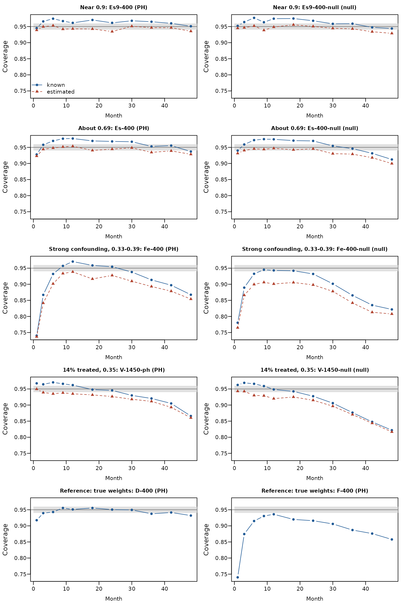

Estimated propensity-score weights: statistical details and properties
Larry F. León
Source:vignettes/articles/estimated_weights_methodology.Rmd
estimated_weights_methodology.RmdThe two options
Propensity-score weights are estimated from the data. The argument
weight_variance of df_counting(),
KM_diff(), plotKM.band_subgroups() and
cumulative_rmst_bands() says how standard errors,
intervals, bands and tests treat them. cox_rhogamma(),
wlr_cumulative() and wlr_dhat_estimates() take
the option from the df_counting() result they are
given.
-
weight_variance = "known"(the default). The weights are treated as fixed constants. The variance of each estimator is the sum of squared per-subject contributions computed with the weights held fixed. -
weight_variance = "estimated". The weights come from a logistic regression for the treatment, supplied asweight_model(the object returned byps_weights()). The sampling variability of the fitted coefficients is carried into the variance by a linearization: each subject’s contribution receives an added term, the subject’s influence on the fitted coefficients times the derivative of the estimator in those coefficients.
Three facts hold for every estimator in the package.
- No point estimate differs between the two options: survival curves, their difference, the RMST, the log-rank score, the hazard ratio, counts and risk tables are identical.
- Under
"estimated"the correction is analytic. The propensity model is fitted once. - Resampling (
draws.band,draws_sb, anddrawsincox_rhogamma()) applies standard normal multipliers to the corrected per-subject contributions. The propensity model is not refitted within a draw, and the weights, the influence values and the derivatives are the same in every draw.
This article gives the derivation and the properties. Each statement about large-sample behaviour is labelled as proved here, cited, or a heuristic argument. Formulas labelled background are not computed by the package. The displayed steps of a derivation (the two lemmas, the expansions written with or , and the projection argument of section 5) are statements about the computed quantities; they are background in the same sense.
Setup and notation
The notation is that of the weightedkm_methodology
article.
Data. There are subjects, the rows analysed. Subject has treatment indicator , baseline covariates , observed time and event indicator . The at-risk and counting processes are and .
Weights. With
the fitted probability of treatment (section 3),
ps_weights() returns one of two weight types:
The weights are never truncated or rescaled.
Weighted counts and curves. For arm ,
the product running over the event times of the arm. The survival difference is .
Estimand. Both weight types weight each arm to the
covariate distribution of all
subjects. Under the identifying assumptions of the
weightedkm_methodology article,
estimates the counterfactual survival function
in the population the rows were sampled from, and
estimates
.
The two weight types give the same curves, because
does not change when the weights of an arm are multiplied by a constant.
The weighted log-rank statistic and the weighted Cox estimate (section
4.4) are computed in the weighted sample of both arms together; the log
hazard ratio estimates the root
of the limit of the weighted score. The two weight types weight the arms
differently in the pooled risk set, so they give different log-rank and
Cox results. No other estimand (treated population, overlap population)
is implemented by ps_weights().
The propensity model
Model. ps_weights() fits, or takes, a
logistic regression for the treatment,
stats::glm(formula, family = binomial(), data = data) with
the default control. With
the row of the model matrix of subject
(
columns, aliased columns dropped) and coefficients
,
Score and information. The score of subject and the information are
For the logistic model the observed and the expected information coincide, and does not involve . The formulas and are computed inside the expression for below.
Influence of the coefficients. The estimate solves . With its limit,
This is the linear representation of an M-estimator (cited:
Lunceford and Davidian (2004), section
3.1, apply it to the logistic propensity model through the theory of
M-estimation). It does not require the model to be correct: when the
model is wrong,
is the limit of the fit and the representation still holds, because
does not involve
(heuristic argument; not proved here).
ps_weights() returns the
matrix IF with rows
.
Derivative of the weights. For the
"ipw" weights, differentiating
and
with
gives (proved here, by differentiation)
ps_weights() returns the
matrix dw with rows
.
Stabilized weights. With
type = "stabilized",
and
are those of "ipw" multiplied by
,
and IF is the same. The proportion
is treated as a fixed number: its estimation is not included in
the correction. For the Kaplan–Meier curves, their difference
and the RMST this loses nothing: those estimators do not depend on
(section 4.1, proved here). For the log-rank score and the Cox
estimate the variability of
is not carried.
Linearization, estimator by estimator
Weighted Kaplan–Meier curve of one arm
Contribution under known weights. For subject of arm ,
the sum running over the event times of the arm; a term is 0 when or . Equivalently,
a sum of the subject’s residual increments (proved here: the two expressions are equal term by term).
Lemma 1 (proved here). For a subject of arm , and a time at which no excluded term occurs,
Proof. , and . Multiplying by and summing over gives .
Two consequences (proved here). is unchanged when all weights of the arm are multiplied by a constant, so by Euler’s relation for homogeneous functions
The contributions are centred, and the curve does not depend on : the derivative of in a common factor of the arm’s weights is .
Representation under known weights (cited; background). With the weights evaluated at the true propensity score, the weighted estimator has the martingale representation of Deng and Wang (2025) (see also Fleming and Harrington (1991) for the unweighted case),
with
the cumulative hazard of
and
the limit of
.
is
with
and
replaced by their estimates; by Lemma 1,
is also the infinitesimal-jackknife value of subject
,
the derivative of
in a case weight multiplying
.
The variance
is the robust variance of
survival::survfit(weights = w, robust = TRUE).
Added term under estimated weights. Write for the curve computed with the weights . By the chain rule and Lemma 1 (proved here),
A first-order expansion of around , with the representation of of section 3, gives (heuristic argument: the remainder is not bounded here)
is the corrected contribution. Every subject contributes, also those in the other arm, through the model. The same construction applies to any group of subjects (an arm within a stratum; all subjects, for the pooled curve), with in place of the arm.
Survival difference
Under "known",
involves subject
’s
own arm only; the two curves are sums over disjoint sets of independent
subjects, and the variance of the difference is the sum of the two arm
variances. Under "estimated" each subject enters both
and
through
,
because one fitted model supplies the weights of both arms. The two
curves are then correlated, and the variance of the difference is
not the sum of the arm variances. The cross term is
(proved here, by expanding the product and using
)
RMST and cumulative RMST difference
The cumulative RMST difference is the integral of the survival
difference over the time grid
of the KM_diff() fit,
with . The map from the difference curve to is linear, so the linearization of section 4.2 carries over: , with the same rule applied to (heuristic argument, as in section 4.1). The package does not form for each subject (background); it applies the rule to the resampled difference curves (section 6).
Weighted log-rank and Cox score
Notation.
is the time weight of the scheme (written
in the weightedcox_methodology article, where the subject
weight is
and the arm
).
For a log hazard ratio
,
Contribution under known weights.
the sum running over the distinct event times. The score, in the sign convention of the package, and the information are
The second expression for holds because the compensator terms sum to zero: for every (proved here). is the weighted log-rank statistic and solves .
Lemma 2 (proved here). With the time weights held fixed,
Proof. Differentiate the second expression for . The term gives . Through , with , the other terms give . The sum of the two is .
Corrected contribution. By the chain rule and Lemma 2, with
and the first-order expansion in gives , a sum of independent mean-zero terms that estimates (heuristic argument).
Test, standard error, interval.
The standard error follows from expanding
in
:
(heuristic argument). Under "known" the same
formulas hold with
in place of
;
for FH(0, 0) they are then the robust score test and robust standard
error of
survival::coxph(weights = , robust = TRUE, ties = "breslow")
(Lin and Wei 1989).
Time-weight schemes. The scheme enters only through
,
evaluated at the observed times. As coded in wt.rg.S(),
with
the pooled weighted Kaplan–Meier curve just before
,
the same for the censoring distribution and
the pooled weighted risk set:
scheme |
depends on the subject weights | |
|---|---|---|
"fh" |
yes, unless | |
"MB" |
yes | |
"schemper" |
yes | |
"XO" |
yes | |
"custom_time" |
for , after | no |
"fh_exp1", "fh_exp2"
|
exponential variants of the FH weight | yes |
"estimated" runs for every scheme, with the formulas
above. The dependence of
on the estimated subject weights is ignored: Lemma 2 holds
fixed. For FH(0, 0) and "custom_time" nothing is ignored.
For the other schemes the omitted term is not derived here and its size
is not bounded here.
Strata. In a stratified df_counting()
call,
is computed within the subject’s stratum,
is the sum over all subjects of all strata, and the variance is the
single sum
over all subjects. It is not a sum of per-stratum variances: the strata
share the coefficients of the model.
Outputs of df_counting() from the
survival package. logrank_results,
cox_results$score, $se, $hr_ci
and $pval carry the same correction, applied to a vector
of weighted score or dfbeta residuals of the coxph()
fit:
Cumulative statistic and covariance with the survival
difference. With
the contribution of subject
to the score up to
(
when
,
the compensator part accumulated up to
otherwise), wlr_cumulative(return_cumulative = TRUE)
returns
and wlr_dhat_estimates() returns, at the grid point read
for tzero, the variance
of the survival difference and the covariance
of the log-rank score with it.
Variance
Sum of squared corrected contributions.
The variance of the RMST difference is taken over resampling draws (section 6). That each sum estimates the variance of its estimator follows from the linearizations of section 4, the contributions being independent across subjects (heuristic argument).
Relation to the "known" variance
(proved here, by expanding the square). For contributions
under known weights and a derivative vector
(for the score,
and
;
for the survival difference,
and
),
The last term is non-negative. The middle term can have either sign,
so in a given sample the "estimated" variance can be
smaller or larger than the "known" one.
Why "known" tends to be conservative when the
propensity model is correct (heuristic argument; the
result for inverse-probability-weighted means is cited). Let
be the population version of the known-weight contribution, computed
with the weights
,
and let
be the distribution of the data when the treatment follows the model
with coefficients
.
When the model is correct, weighting by the true propensity score
removes the dependence of the weighted sample on the treatment
mechanism, so
for every
.
Differentiating this identity in
under the integral sign gives
with the score of the propensity model. The derivative estimates and estimates , so
the residual of the projection of the known-weight contribution on the space spanned by the score of the propensity model. A residual has variance no larger than the variable projected:
The estimator computed with estimated weights therefore has a
large-sample variance no larger than the "known" formula
estimates, and the "known" intervals are too wide by the
projected part. The two agree when the known-weight contribution is
uncorrelated with the score of the propensity model. For
inverse-probability-weighted means with a logistic propensity model this
is the result of Lunceford and Davidian
(2004) (section 3.1): the variance with the estimated propensity
score is the variance with the known one minus a quadratic form of this
kind. Hirano et al. (2003) show that
weighting by an estimated propensity score, in place of the true one,
leads to an efficient estimate of the average treatment effect. The
steps not proved here are the interchange of differentiation and
expectation for the survival contributions, and the convergence of
and of the estimated contributions.
The argument uses the correctness of the model at one point only, the identity . When the model is wrong, the linearization of section 4 still describes the variability of the estimator around its limit, but the ordering of the two variances is not implied, and the limit is not the causal quantity.
The sample counterpart of the projected variance, , is background: the package does not compute it. Section 8 shows it beside the package value.
Multiplier resampling with corrected contributions
Resampled survival difference. Let
be independent standard normal multipliers, independent of the data
(generated by KM_diff() as one matrix for the controls and
one for the treated, one row per subject). One resampled deviation of
the curve of arm
,
and of the difference, is
The same multiplier multiplies the subject’s own-arm term and its term through the model, in both arms. Conditionally on the data, is a mean-zero Gaussian process with covariance ; its variance at is exactly of section 5 (proved here: the are independent with variance 1).
Band for the survival difference. With
draws (draws.band) and
,
the maximum over the time grid of the fit (points where the ratio is undefined are skipped).
RMST. Each resampled difference curve is integrated
with the rule of section 4.3,
.
cumulative_rmst_bands() uses two sets of draws. The
pointwise variance
is the sample variance over the draws of the KM_diff() fit
it is given. A second, independent set (draws_sb draws, its
own seed) is standardized by
and gives the critical value:
Both sets are built from the corrected contributions when the fit and
the call use "estimated"; a fit made with the other option
is an error.
Resampled score in cox_rhogamma(). With
draws > 0,
The resampling standard error is the standard deviation of over the draws, the de-biased estimate is minus their mean, and the resampling interval is the de-biased estimate plus and minus the normal quantile times the resampling standard error.
What is and is not resampled. , , , , , the curves and the information are computed once from the data. Only the multipliers change between draws. The estimation of the weights enters each draw through the term or of the contribution, not through a new fit.
Justification. For the unweighted estimators, replacing the martingale increments by normal multipliers times observed increments is justified by the results of Lin et al. (1993) and Dobler et al. (2017) (cited). For the corrected contributions the argument is the conditional multiplier central limit theorem applied to the linear representation , with the estimated contributions in place of the true ones (heuristic argument; not proved here). It needs:
- the linear representations of section 4 to hold uniformly in over the time range of the grid, which requires the weighted risk set of each arm to stay away from zero at the end of the range;
- the estimated contributions to converge to the true ones, in the sense that in probability;
- contributions with finite second moments, which needs weights with finite second moments (overlap, section 7);
- to be asymptotically linear (section 3).
Under these conditions the conditional distribution of given the data and the distribution of have the same Gaussian limit, and the same holds for continuous functionals: the standardized supremum and the integral.
Pointwise resampling variance (draws > 0)
under "estimated". In df_counting(),
KM_diff() and plotKM.band_subgroups(),
draws > 0 replaces the analytic pointwise variance of a
curve by the variance over draws of
.
In the source that route draws multipliers for the members of one group
at a time and uses that group’s contributions only;
needs the multipliers and the influence values of all
subjects together. With weight_variance = "estimated" the
argument check stops with an error unless draws is 0. The
development record of this version lists draws = 0 as a
validation rule and gives no further reason. The analytic variance
is the quantity such a resampling variance would estimate.
Conditions and properties
Correct propensity model. The estimand of section 2
requires it. The variance formulas of section 5 describe the variability
of the estimator around its limit whether or not the model is correct;
the ordering of "known" and "estimated" in
section 5 requires a correct model. The model must be a logistic
glm fitted on exactly the rows analysed.
Overlap. The fitted probabilities must stay away
from 0 and 1. ps_weights() stops when a fitted probability
is numerically 0 or 1; it does not otherwise restrict them.
Sample size relative to the concentration of the weights. The linearizations are first-order. When a few subjects carry most of the weight of an arm, the sums of section 5 are dominated by a few terms and the normal approximation is poor. The diagnostic is the effective sample size by arm,
returned with its ratio to the arm size as
df_counting()$ess. A ratio near 1 means evenly spread
weights. The package sets no threshold on it, and no warning depends on
it.
Simulation results by time
Design. Each cell is a Monte Carlo study of 2,000
replicates of one data-generating model. A covariate
drives both treatment and outcome. The event time of a subject in arm
is
with
,
independent of
;
is standard exponential, so each arm’s marginal survival is
,
with control hazard 0.04 per month and treated hazard
(proportional hazards, hazard ratio 0.670) or 0.04 (null). Censoring is
uniform on (0, 72) months. Treatment is Bernoulli with probability
,
,
and the weights are built in every replicate by
ps_weights(treat ~ X) from the fitted model; the analyses
are run under weight_variance = "known" and
"estimated" on the same data and weights. The regimes,
named by the treated arm’s ESS ratio (mean of ESS /
over replicates, control / treated in the tables):
- Near 0.9: , , stabilized weights (treated ESS ratio 0.90). The restricted Rotterdam example of section 8 has weights spread about this evenly. The coefficients were set so that the population ESS ratio of the treated arm is about 0.91 and the treated proportion matches that of the next regime.
- About 0.69: , , stabilized weights (treated ESS ratio 0.69).
- Strong confounding: , , inverse-probability weights (treated ESS ratio 0.37–0.39).
- 14% treated: (14.3% treated), , stabilized weights (treated ESS ratio 0.35–0.36); the control arm’s weights are nearly even and the treated arm’s are concentrated.
-
Reference, true weights: the designs of the second
and third regimes with the true propensities as inverse-probability
weights (treated ESS ratio 0.69 and 0.39), analysed under
"known"only (with true weights there is no estimation to carry).
Every regime has a proportional-hazards cell and a null cell, except
the reference, which has the proportional-hazards cell of each design.
The truth is in closed form:
;
the RMST difference
;
the log hazard ratio
or 0 (both arms are exponential marginally). A replicate counts at month
when each arm has a subject with observed time at least
.
The RMST difference at month
is read on the grid of the KM_diff() fit (the observed
times) at the last grid time
of the replicate, so its bias and coverage are against
,
the true RMST difference at that time; the mean of
over replicates is at most 0.068 months (month 48). A Kaplan–Meier curve
is constant between grid times, so the survival difference at
is that at
;
the bootstrap RMST of Table 5 integrates each curve to month 36 itself
and is scored against
.
Coverage is that of the nominal 0.95 pointwise interval; an interval
that could not be computed counts as not covering. The Monte Carlo
standard error (MCSE) of a coverage near 0.95 is 0.005 at 2,000
replicates and 0.010 at 500. Where the reported months fall among
observed event times (percentile, from the formula, marginal over
;
the same in every regime because the outcome model is the same): month 1
at percentile 6 (control) and 5 (treated, PH); month 6 at percentile 30
(control) and 26 (treated, PH); month 12 at percentile 52 (control) and
45 (treated, PH); month 24 at percentile 79 (control) and 72 (treated,
PH); month 36 at percentile 92 (control) and 88 (treated, PH); month 48
at percentile 97 (control) and 96 (treated, PH). The 10th and 90th
percentiles are months 1.8 and 33.7 (control) and 2.2 and 38.6 (treated,
PH); months 1 and 48 lie outside them.
Provenance: run for weightedsurv 0.2.0 (the near-0.9 cells at package
commit f55001f; the other cells with estimated weights at c195953 and
the true-weight cells at d9b7558); the scripts and records are kept in
the package repository under dev/audit/. This article reads
only the stored summary
sim_results/ps_weight_results_by_time.csv.
Columns of Tables 1 to 3: true value; bias (mean estimate minus truth; the estimate is the same under both options); empirical SD of the estimate; mean standard error under each option; coverage with its MCSE in brackets; mean interval length. ESS c / t: mean ESS ratio, control / treated.
| Regime | Cell | Scenario | ESS c / t | Month | True | Bias | Emp SD | SE known | SE estimated | Cov known | Cov estimated | Length known | Length estimated |
|---|---|---|---|---|---|---|---|---|---|---|---|---|---|
| Near 0.9 | Es9-400 | PH | 0.96 / 0.90 | 1 | 0.0128 | 0.0007 | 0.0182 | 0.0183 | 0.0176 | 0.945 (0.005) | 0.939 (0.005) | 0.072 | 0.069 |
| 6 | 0.0648 | 0.0001 | 0.0358 | 0.0399 | 0.0361 | 0.975 (0.004) | 0.953 (0.005) | 0.156 | 0.141 | ||||
| 12 | 0.1061 | -0.0003 | 0.0452 | 0.0500 | 0.0443 | 0.962 (0.004) | 0.943 (0.005) | 0.196 | 0.174 | ||||
| 24 | 0.1426 | 0.0002 | 0.0536 | 0.0578 | 0.0518 | 0.962 (0.004) | 0.934 (0.006) | 0.227 | 0.203 | ||||
| 36 | 0.1440 | 0.0009 | 0.0563 | 0.0601 | 0.0554 | 0.965 (0.004) | 0.947 (0.005) | 0.236 | 0.217 | ||||
| 48 | 0.1295 | 0.0008 | 0.0599 | 0.0617 | 0.0585 | 0.951 (0.005) | 0.935 (0.005) | 0.242 | 0.229 | ||||
| Es9-400-null | null | 0.95 / 0.90 | 1 | 0.0000 | -0.0009 | 0.0195 | 0.0198 | 0.0190 | 0.952 (0.005) | 0.945 (0.005) | 0.078 | 0.074 | |
| 6 | 0.0000 | -0.0001 | 0.0386 | 0.0434 | 0.0387 | 0.977 (0.003) | 0.952 (0.005) | 0.170 | 0.152 | ||||
| 12 | 0.0000 | 0.0003 | 0.0477 | 0.0535 | 0.0469 | 0.975 (0.004) | 0.949 (0.005) | 0.210 | 0.184 | ||||
| 24 | 0.0000 | 0.0003 | 0.0543 | 0.0586 | 0.0526 | 0.968 (0.004) | 0.951 (0.005) | 0.230 | 0.206 | ||||
| 36 | 0.0000 | -0.0011 | 0.0542 | 0.0571 | 0.0532 | 0.959 (0.004) | 0.943 (0.005) | 0.224 | 0.208 | ||||
| 48 | 0.0000 | -0.0021 | 0.0539 | 0.0543 | 0.0520 | 0.944 (0.005) | 0.929 (0.006) | 0.213 | 0.204 | ||||
| About 0.69 | Es-400 | PH | 0.83 / 0.69 | 1 | 0.0128 | -0.0001 | 0.0215 | 0.0211 | 0.0202 | 0.928 (0.006) | 0.923 (0.006) | 0.083 | 0.079 |
| 6 | 0.0648 | -0.0001 | 0.0389 | 0.0439 | 0.0387 | 0.970 (0.004) | 0.948 (0.005) | 0.172 | 0.152 | ||||
| 12 | 0.1061 | 0.0004 | 0.0464 | 0.0543 | 0.0467 | 0.978 (0.003) | 0.954 (0.005) | 0.213 | 0.183 | ||||
| 24 | 0.1426 | -0.0010 | 0.0569 | 0.0636 | 0.0559 | 0.969 (0.004) | 0.945 (0.005) | 0.249 | 0.219 | ||||
| 36 | 0.1440 | -0.0033 | 0.0640 | 0.0678 | 0.0620 | 0.953 (0.005) | 0.934 (0.006) | 0.266 | 0.243 | ||||
| 48 | 0.1295 | -0.0058 | 0.0692 | 0.0703 | 0.0664 | 0.937 (0.005) | 0.928 (0.006) | 0.275 | 0.260 | ||||
| Es-400-null | null | 1 | 0.0000 | -0.0000 | 0.0225 | 0.0223 | 0.0212 | 0.940 (0.005) | 0.931 (0.006) | 0.087 | 0.083 | ||
| 6 | 0.0000 | -0.0022 | 0.0425 | 0.0476 | 0.0415 | 0.973 (0.004) | 0.946 (0.005) | 0.186 | 0.163 | ||||
| 12 | 0.0000 | -0.0017 | 0.0514 | 0.0590 | 0.0506 | 0.975 (0.003) | 0.947 (0.005) | 0.231 | 0.198 | ||||
| 24 | 0.0000 | -0.0015 | 0.0606 | 0.0662 | 0.0589 | 0.970 (0.004) | 0.946 (0.005) | 0.259 | 0.231 | ||||
| 36 | 0.0000 | -0.0038 | 0.0654 | 0.0655 | 0.0608 | 0.946 (0.005) | 0.929 (0.006) | 0.257 | 0.238 | ||||
| 48 | 0.0000 | -0.0042 | 0.0654 | 0.0619 | 0.0593 | 0.912 (0.006) | 0.900 (0.007) | 0.243 | 0.232 | ||||
| Strong confounding, 0.33-0.39 | Fe-400 | PH | 0.50 / 0.39 | 1 | 0.0128 | -0.0015 | 0.0461 | 0.0282 | 0.0268 | 0.741 (0.010) | 0.737 (0.010) | 0.111 | 0.105 |
| 6 | 0.0648 | -0.0079 | 0.0648 | 0.0615 | 0.0542 | 0.932 (0.006) | 0.901 (0.007) | 0.241 | 0.213 | ||||
| 12 | 0.1061 | -0.0091 | 0.0687 | 0.0733 | 0.0622 | 0.971 (0.004) | 0.939 (0.005) | 0.287 | 0.244 | ||||
| 24 | 0.1426 | -0.0129 | 0.0807 | 0.0832 | 0.0722 | 0.955 (0.005) | 0.927 (0.006) | 0.326 | 0.283 | ||||
| 36 | 0.1440 | -0.0157 | 0.0922 | 0.0869 | 0.0789 | 0.913 (0.006) | 0.893 (0.007) | 0.341 | 0.309 | ||||
| 48 | 0.1295 | -0.0202 | 0.0986 | 0.0863 | 0.0811 | 0.868 (0.008) | 0.854 (0.008) | 0.338 | 0.318 | ||||
| Fe-400-null | null | 0.51 / 0.37 | 1 | 0.0000 | -0.0039 | 0.0448 | 0.0283 | 0.0267 | 0.780 (0.009) | 0.765 (0.009) | 0.111 | 0.105 | |
| 6 | 0.0000 | -0.0070 | 0.0685 | 0.0654 | 0.0567 | 0.932 (0.006) | 0.899 (0.007) | 0.256 | 0.222 | ||||
| 12 | 0.0000 | -0.0089 | 0.0811 | 0.0808 | 0.0683 | 0.943 (0.005) | 0.901 (0.007) | 0.317 | 0.268 | ||||
| 24 | 0.0000 | -0.0097 | 0.0949 | 0.0898 | 0.0792 | 0.932 (0.006) | 0.898 (0.007) | 0.352 | 0.310 | ||||
| 36 | 0.0000 | -0.0128 | 0.1023 | 0.0850 | 0.0784 | 0.865 (0.008) | 0.842 (0.008) | 0.333 | 0.307 | ||||
| 48 | 0.0000 | -0.0081 | 0.0974 | 0.0743 | 0.0704 | 0.822 (0.009) | 0.808 (0.009) | 0.291 | 0.276 | ||||
| 14% treated, 0.35 | V-1450-ph | PH | 0.95 / 0.35 | 1 | 0.0128 | -0.0001 | 0.0111 | 0.0111 | 0.0104 | 0.968 (0.004) | 0.950 (0.005) | 0.044 | 0.041 |
| 6 | 0.0648 | -0.0005 | 0.0287 | 0.0312 | 0.0276 | 0.971 (0.004) | 0.935 (0.006) | 0.122 | 0.108 | ||||
| 12 | 0.1061 | -0.0017 | 0.0439 | 0.0466 | 0.0420 | 0.962 (0.004) | 0.935 (0.006) | 0.183 | 0.165 | ||||
| 24 | 0.1426 | -0.0054 | 0.0652 | 0.0656 | 0.0614 | 0.946 (0.005) | 0.926 (0.006) | 0.257 | 0.241 | ||||
| 36 | 0.1440 | -0.0079 | 0.0779 | 0.0754 | 0.0724 | 0.920 (0.006) | 0.911 (0.006) | 0.296 | 0.284 | ||||
| 48 | 0.1295 | -0.0100 | 0.0902 | 0.0786 | 0.0764 | 0.866 (0.008) | 0.860 (0.008) | 0.308 | 0.299 | ||||
| V-1450-null | null | 0.95 / 0.36 | 1 | 0.0000 | -0.0002 | 0.0126 | 0.0132 | 0.0121 | 0.963 (0.004) | 0.943 (0.005) | 0.052 | 0.047 | |
| 6 | 0.0000 | -0.0015 | 0.0358 | 0.0385 | 0.0343 | 0.966 (0.004) | 0.930 (0.006) | 0.151 | 0.134 | ||||
| 12 | 0.0000 | -0.0037 | 0.0547 | 0.0558 | 0.0509 | 0.949 (0.005) | 0.920 (0.006) | 0.219 | 0.200 | ||||
| 24 | 0.0000 | -0.0054 | 0.0743 | 0.0712 | 0.0676 | 0.927 (0.006) | 0.915 (0.006) | 0.279 | 0.265 | ||||
| 36 | 0.0000 | -0.0080 | 0.0809 | 0.0724 | 0.0702 | 0.876 (0.007) | 0.871 (0.008) | 0.284 | 0.275 | ||||
| 48 | 0.0000 | -0.0060 | 0.0785 | 0.0661 | 0.0647 | 0.822 (0.009) | 0.817 (0.009) | 0.259 | 0.254 | ||||
| Reference: true weights | D-400 | PH | 0.84 / 0.69 | 1 | 0.0128 | 0.0000 | 0.0217 | 0.0207 | 0.917 (0.006) | 0.081 | |||
| 6 | 0.0648 | -0.0006 | 0.0434 | 0.0433 | 0.943 (0.005) | 0.170 | |||||||
| 12 | 0.1061 | -0.0010 | 0.0531 | 0.0538 | 0.951 (0.005) | 0.211 | |||||||
| 24 | 0.1426 | -0.0013 | 0.0623 | 0.0632 | 0.951 (0.005) | 0.248 | |||||||
| 36 | 0.1440 | -0.0018 | 0.0678 | 0.0674 | 0.938 (0.005) | 0.264 | |||||||
| 48 | 0.1295 | -0.0017 | 0.0729 | 0.0703 | 0.932 (0.006) | 0.275 | |||||||
| F-400 | 0.51 / 0.39 | 1 | 0.0128 | -0.0034 | 0.0410 | 0.0269 | 0.740 (0.010) | 0.106 | |||||
| 6 | 0.0648 | -0.0057 | 0.0678 | 0.0605 | 0.915 (0.006) | 0.237 | |||||||
| 12 | 0.1061 | -0.0072 | 0.0777 | 0.0722 | 0.936 (0.005) | 0.283 | |||||||
| 24 | 0.1426 | -0.0130 | 0.0923 | 0.0822 | 0.916 (0.006) | 0.322 | |||||||
| 36 | 0.1440 | -0.0159 | 0.0997 | 0.0863 | 0.887 (0.007) | 0.338 | |||||||
| 48 | 0.1295 | -0.0189 | 0.1046 | 0.0861 | 0.858 (0.008) | 0.338 |
Evaluable replicates are fewer than 2,000 only at months 36, 42 and 48, in 6 cells (fewest: 1,919, Fe-400-null, month 48).

Figure 1. Coverage of the survival difference at the 11 stored months. Solid: “known”; dashed: “estimated” (absent with true weights). Grey band: 0.95 plus or minus 2 MCSE at 2,000 replicates.
| Regime | Cell | Scenario | ESS c / t | Month | True | Bias | Emp SD | SE known | SE estimated | Cov known | Cov estimated | Length known | Length estimated |
|---|---|---|---|---|---|---|---|---|---|---|---|---|---|
| Near 0.9 | Es9-400 | PH | 0.96 / 0.90 | 1 | 0.006 | 0.000 | 0.010 | 0.010 | 0.010 | 0.948 (0.005) | 0.942 (0.005) | 0.04 | 0.04 |
| 6 | 0.208 | 0.003 | 0.130 | 0.143 | 0.130 | 0.973 (0.004) | 0.954 (0.005) | 0.56 | 0.51 | ||||
| 12 | 0.730 | 0.002 | 0.328 | 0.372 | 0.323 | 0.975 (0.003) | 0.953 (0.005) | 1.46 | 1.27 | ||||
| 24 | 2.271 | -0.003 | 0.782 | 0.899 | 0.758 | 0.974 (0.004) | 0.941 (0.005) | 3.52 | 2.97 | ||||
| 36 | 4.014 | 0.006 | 1.236 | 1.434 | 1.207 | 0.976 (0.003) | 0.944 (0.005) | 5.62 | 4.73 | ||||
| 48 | 5.664 | 0.019 | 1.685 | 1.948 | 1.656 | 0.975 (0.003) | 0.945 (0.005) | 7.64 | 6.49 | ||||
| Es9-400-null | null | 0.95 / 0.90 | 1 | 0.000 | -0.000 | 0.011 | 0.011 | 0.011 | 0.949 (0.005) | 0.943 (0.005) | 0.04 | 0.04 | |
| 6 | 0.000 | -0.003 | 0.140 | 0.156 | 0.139 | 0.970 (0.004) | 0.948 (0.005) | 0.61 | 0.54 | ||||
| 12 | 0.000 | -0.003 | 0.346 | 0.401 | 0.342 | 0.975 (0.004) | 0.950 (0.005) | 1.57 | 1.34 | ||||
| 24 | 0.000 | 0.011 | 0.798 | 0.944 | 0.786 | 0.984 (0.003) | 0.952 (0.005) | 3.70 | 3.08 | ||||
| 36 | 0.000 | 0.003 | 1.246 | 1.456 | 1.219 | 0.978 (0.003) | 0.945 (0.005) | 5.71 | 4.78 | ||||
| 48 | 0.000 | -0.022 | 1.660 | 1.902 | 1.614 | 0.976 (0.003) | 0.941 (0.005) | 7.45 | 6.33 | ||||
| About 0.69 | Es-400 | PH | 0.83 / 0.69 | 1 | 0.006 | 0.000 | 0.013 | 0.012 | 0.011 | 0.893 (0.007) | 0.884 (0.007) | 0.05 | 0.04 |
| 6 | 0.208 | 0.003 | 0.150 | 0.162 | 0.144 | 0.961 (0.004) | 0.939 (0.005) | 0.64 | 0.57 | ||||
| 12 | 0.730 | 0.005 | 0.356 | 0.414 | 0.349 | 0.978 (0.003) | 0.954 (0.005) | 1.62 | 1.37 | ||||
| 24 | 2.271 | 0.005 | 0.817 | 0.993 | 0.811 | 0.980 (0.003) | 0.954 (0.005) | 3.89 | 3.18 | ||||
| 36 | 4.014 | -0.012 | 1.330 | 1.601 | 1.314 | 0.980 (0.003) | 0.947 (0.005) | 6.27 | 5.15 | ||||
| 48 | 5.664 | -0.064 | 1.866 | 2.193 | 1.833 | 0.976 (0.003) | 0.942 (0.005) | 8.60 | 7.19 | ||||
| Es-400-null | null | 1 | 0.000 | 0.000 | 0.013 | 0.012 | 0.012 | 0.919 (0.006) | 0.911 (0.006) | 0.05 | 0.05 | ||
| 6 | 0.000 | -0.008 | 0.158 | 0.173 | 0.152 | 0.959 (0.004) | 0.933 (0.006) | 0.68 | 0.59 | ||||
| 12 | 0.000 | -0.023 | 0.381 | 0.445 | 0.371 | 0.977 (0.003) | 0.937 (0.005) | 1.74 | 1.45 | ||||
| 24 | 0.000 | -0.044 | 0.875 | 1.060 | 0.864 | 0.979 (0.003) | 0.948 (0.005) | 4.16 | 3.39 | ||||
| 36 | 0.000 | -0.076 | 1.419 | 1.657 | 1.368 | 0.976 (0.003) | 0.945 (0.005) | 6.50 | 5.36 | ||||
| 48 | 0.000 | -0.110 | 1.947 | 2.184 | 1.841 | 0.969 (0.004) | 0.939 (0.005) | 8.56 | 7.22 | ||||
| Strong confounding, 0.33-0.39 | Fe-400 | PH | 0.50 / 0.39 | 1 | 0.006 | -0.001 | 0.029 | 0.015 | 0.014 | 0.686 (0.010) | 0.678 (0.010) | 0.06 | 0.05 |
| 6 | 0.208 | -0.021 | 0.286 | 0.233 | 0.208 | 0.892 (0.007) | 0.863 (0.008) | 0.91 | 0.82 | ||||
| 12 | 0.730 | -0.072 | 0.619 | 0.587 | 0.500 | 0.945 (0.005) | 0.910 (0.006) | 2.30 | 1.96 | ||||
| 24 | 2.271 | -0.202 | 1.291 | 1.375 | 1.125 | 0.961 (0.004) | 0.919 (0.006) | 5.39 | 4.41 | ||||
| 36 | 4.014 | -0.366 | 2.041 | 2.184 | 1.796 | 0.957 (0.005) | 0.915 (0.006) | 8.56 | 7.04 | ||||
| 48 | 5.664 | -0.575 | 2.840 | 2.945 | 2.466 | 0.938 (0.005) | 0.908 (0.006) | 11.54 | 9.67 | ||||
| Fe-400-null | null | 0.51 / 0.37 | 1 | 0.000 | -0.002 | 0.031 | 0.015 | 0.014 | 0.736 (0.010) | 0.716 (0.010) | 0.06 | 0.06 | |
| 6 | 0.000 | -0.030 | 0.287 | 0.240 | 0.210 | 0.905 (0.007) | 0.864 (0.008) | 0.94 | 0.83 | ||||
| 12 | 0.000 | -0.079 | 0.660 | 0.623 | 0.520 | 0.930 (0.006) | 0.892 (0.007) | 2.44 | 2.04 | ||||
| 24 | 0.000 | -0.195 | 1.498 | 1.487 | 1.217 | 0.936 (0.005) | 0.889 (0.007) | 5.83 | 4.77 | ||||
| 36 | 0.000 | -0.320 | 2.407 | 2.310 | 1.917 | 0.926 (0.006) | 0.883 (0.007) | 9.06 | 7.51 | ||||
| 48 | 0.000 | -0.394 | 3.249 | 2.996 | 2.531 | 0.910 (0.007) | 0.873 (0.008) | 11.74 | 9.92 | ||||
| 14% treated, 0.35 | V-1450-ph | PH | 0.95 / 0.35 | 1 | 0.006 | -0.000 | 0.006 | 0.006 | 0.006 | 0.961 (0.004) | 0.943 (0.005) | 0.02 | 0.02 |
| 6 | 0.208 | -0.000 | 0.091 | 0.103 | 0.089 | 0.973 (0.004) | 0.942 (0.005) | 0.40 | 0.35 | ||||
| 12 | 0.730 | -0.006 | 0.275 | 0.306 | 0.264 | 0.970 (0.004) | 0.941 (0.005) | 1.20 | 1.03 | ||||
| 24 | 2.271 | -0.047 | 0.837 | 0.888 | 0.784 | 0.961 (0.004) | 0.930 (0.006) | 3.48 | 3.07 | ||||
| 36 | 4.014 | -0.129 | 1.543 | 1.586 | 1.435 | 0.946 (0.005) | 0.926 (0.006) | 6.22 | 5.63 | ||||
| 48 | 5.664 | -0.233 | 2.320 | 2.306 | 2.123 | 0.931 (0.006) | 0.913 (0.006) | 9.04 | 8.32 | ||||
| V-1450-null | null | 0.95 / 0.36 | 1 | 0.000 | -0.000 | 0.007 | 0.007 | 0.007 | 0.968 (0.004) | 0.954 (0.005) | 0.03 | 0.03 | |
| 6 | 0.000 | -0.003 | 0.111 | 0.126 | 0.108 | 0.975 (0.004) | 0.939 (0.005) | 0.49 | 0.43 | ||||
| 12 | 0.000 | -0.019 | 0.341 | 0.375 | 0.325 | 0.964 (0.004) | 0.938 (0.005) | 1.47 | 1.27 | ||||
| 24 | 0.000 | -0.073 | 1.004 | 1.031 | 0.923 | 0.949 (0.005) | 0.922 (0.006) | 4.04 | 3.62 | ||||
| 36 | 0.000 | -0.158 | 1.753 | 1.718 | 1.574 | 0.931 (0.006) | 0.910 (0.006) | 6.74 | 6.17 | ||||
| 48 | 0.000 | -0.173 | 2.457 | 2.340 | 2.175 | 0.914 (0.006) | 0.899 (0.007) | 9.17 | 8.53 | ||||
| Reference: true weights | D-400 | PH | 0.84 / 0.69 | 1 | 0.006 | 0.000 | 0.013 | 0.011 | 0.896 (0.007) | 0.04 | |||
| 6 | 0.208 | -0.002 | 0.162 | 0.159 | 0.940 (0.005) | 0.62 | |||||||
| 12 | 0.730 | -0.007 | 0.406 | 0.407 | 0.947 (0.005) | 1.60 | |||||||
| 24 | 2.271 | -0.020 | 0.969 | 0.982 | 0.949 (0.005) | 3.85 | |||||||
| 36 | 4.014 | -0.038 | 1.558 | 1.586 | 0.952 (0.005) | 6.22 | |||||||
| 48 | 5.664 | -0.062 | 2.151 | 2.181 | 0.948 (0.005) | 8.55 | |||||||
| F-400 | 0.51 / 0.39 | 1 | 0.006 | -0.001 | 0.023 | 0.014 | 0.695 (0.010) | 0.06 | |||||
| 6 | 0.208 | -0.022 | 0.279 | 0.226 | 0.876 (0.007) | 0.89 | |||||||
| 12 | 0.730 | -0.061 | 0.657 | 0.573 | 0.910 (0.006) | 2.25 | |||||||
| 24 | 2.271 | -0.187 | 1.507 | 1.348 | 0.919 (0.006) | 5.28 | |||||||
| 36 | 4.014 | -0.363 | 2.419 | 2.142 | 0.905 (0.007) | 8.40 | |||||||
| 48 | 5.664 | -0.552 | 3.321 | 2.903 | 0.898 (0.007) | 11.38 |
Table 2: True is at the stated month; bias and coverage are against , the last grid time of each replicate (design paragraph above).
| Regime | Cell | Scenario | ESS c / t | Statistic | True | Bias | Emp SD | SE known | SE estimated | Cov known | Cov estimated | Length known | Length estimated |
|---|---|---|---|---|---|---|---|---|---|---|---|---|---|
| Near 0.9 | Es9-400 | PH | 0.96 / 0.90 | FH(0,0) | -0.4 | -0.0030 | 0.1203 | 0.1387 | 0.1188 | 0.976 (0.003) | 0.953 (0.005) | 0.544 | 0.466 |
| FH(0,1) | -0.4 | -0.0056 | 0.1598 | 0.1659 | 0.1561 | 0.954 (0.005) | 0.945 (0.005) | 0.650 | 0.612 | ||||
| Es9-400-null | null | 0.95 / 0.90 | FH(0,0) | 0.0 | 0.0037 | 0.1167 | 0.1332 | 0.1132 | 0.977 (0.003) | 0.943 (0.005) | 0.522 | 0.444 | |
| FH(0,1) | 0.0 | 0.0089 | 0.1569 | 0.1599 | 0.1505 | 0.951 (0.005) | 0.939 (0.005) | 0.627 | 0.590 | ||||
| About 0.69 | Es-400 | PH | 0.83 / 0.69 | FH(0,0) | -0.4 | 0.0059 | 0.1356 | 0.1565 | 0.1323 | 0.976 (0.003) | 0.944 (0.005) | 0.613 | 0.519 |
| FH(0,1) | -0.4 | 0.0120 | 0.1816 | 0.1868 | 0.1751 | 0.952 (0.005) | 0.936 (0.005) | 0.732 | 0.686 | ||||
| Es-400-null | null | FH(0,0) | 0.0 | 0.0115 | 0.1399 | 0.1537 | 0.1301 | 0.968 (0.004) | 0.943 (0.005) | 0.603 | 0.510 | ||
| FH(0,1) | 0.0 | 0.0170 | 0.1921 | 0.1843 | 0.1734 | 0.940 (0.005) | 0.925 (0.006) | 0.723 | 0.680 | ||||
| Strong confounding, 0.33-0.39 | Fe-400 | PH | 0.50 / 0.39 | FH(0,0) | -0.4 | 0.0415 | 0.2086 | 0.2099 | 0.1768 | 0.933 (0.006) | 0.901 (0.007) | 0.823 | 0.693 |
| FH(0,1) | -0.4 | 0.0482 | 0.2655 | 0.2341 | 0.2173 | 0.898 (0.007) | 0.880 (0.007) | 0.918 | 0.852 | ||||
| Fe-400-null | null | 0.51 / 0.37 | FH(0,0) | 0.0 | 0.0351 | 0.2383 | 0.2138 | 0.1811 | 0.914 (0.006) | 0.871 (0.008) | 0.838 | 0.710 | |
| FH(0,1) | 0.0 | 0.0415 | 0.2992 | 0.2365 | 0.2203 | 0.864 (0.008) | 0.847 (0.008) | 0.927 | 0.864 | ||||
| 14% treated, 0.35 | V-1450-ph | PH | 0.95 / 0.35 | FH(0,0) | -0.4 | 0.0142 | 0.1780 | 0.1712 | 0.1588 | 0.920 (0.006) | 0.902 (0.007) | 0.671 | 0.623 |
| V-1450-null | null | 0.95 / 0.36 | FH(0,0) | 0.0 | 0.0181 | 0.1793 | 0.1658 | 0.1544 | 0.906 (0.007) | 0.889 (0.007) | 0.650 | 0.605 | |
| Reference: true weights | D-400 | PH | 0.84 / 0.69 | FH(0,0) | -0.4 | 0.0020 | 0.1549 | 0.1560 | 0.952 (0.005) | 0.611 | |||
| FH(0,1) | -0.4 | 0.0004 | 0.1911 | 0.1865 | 0.945 (0.005) | 0.731 | |||||||
| F-400 | 0.51 / 0.39 | FH(0,0) | -0.4 | 0.0380 | 0.2414 | 0.2080 | 0.899 (0.007) | 0.815 | |||||
| FH(0,1) | -0.4 | 0.0441 | 0.2823 | 0.2340 | 0.875 (0.007) | 0.917 |
| Regime | Cell | Scenario | Band | Cov known | Cov estimated | Width known | Width estimated |
|---|---|---|---|---|---|---|---|
| Near 0.9 | Es9-400 | PH | difference | 0.978 (0.003) | 0.955 (0.005) | 0.313 | 0.286 |
| RMST | 0.987 (0.003) | 0.971 (0.004) | 3.234 | 2.787 | |||
| Es9-400-null | null | difference | 0.983 (0.003) | 0.956 (0.005) | 0.324 | 0.294 | |
| RMST | 0.987 (0.003) | 0.967 (0.004) | 3.223 | 2.750 | |||
| About 0.69 | Es-400 | PH | difference | 0.976 (0.003) | 0.949 (0.005) | 0.342 | 0.306 |
| RMST | 0.982 (0.003) | 0.958 (0.005) | 3.597 | 3.020 | |||
| Es-400-null | null | difference | 0.962 (0.004) | 0.939 (0.005) | 0.358 | 0.320 | |
| RMST | 0.980 (0.003) | 0.958 (0.005) | 3.622 | 3.036 | |||
| Strong confounding, 0.33-0.39 | Fe-400 | PH | difference | 0.897 (0.007) | 0.864 (0.008) | 0.446 | 0.394 |
| RMST | 0.887 (0.007) | 0.864 (0.008) | 4.981 | 4.181 | |||
| Fe-400-null | null | difference | 0.865 (0.008) | 0.818 (0.009) | 0.475 | 0.420 | |
| RMST | 0.910 (0.006) | 0.872 (0.007) | 5.038 | 4.226 | |||
| 14% treated, 0.35 | V-1450-ph | PH | difference | 0.932 (0.006) | 0.897 (0.007) | 0.313 | 0.292 |
| RMST | 0.973 (0.004) | 0.949 (0.005) | 3.101 | 2.774 | |||
| V-1450-null | null | difference | 0.875 (0.007) | 0.840 (0.008) | 0.350 | 0.329 | |
| RMST | 0.962 (0.004) | 0.935 (0.006) | 3.486 | 3.150 | |||
| Reference: true weights | D-400 | PH | difference | 0.954 (0.005) | 0.339 | ||
| RMST | 0.966 (0.004) | 3.540 | |||||
| F-400 | difference | 0.870 (0.008) | 0.441 | ||||
| RMST | 0.873 (0.007) | 4.883 |
| Regime | Cell | Estimand | Cov known | Cov estimated | Cov boot normal | Cov boot percentile | Length known | Length estimated | Length boot normal | Length boot percentile |
|---|---|---|---|---|---|---|---|---|---|---|
| About 0.69 | E-400 | difference, month 18 | 0.972 | 0.934 | 0.936 (0.011) | 0.936 | 0.235 | 0.202 | 0.204 | 0.200 |
| RMST, month 36 | 0.974 | 0.940 | 0.942 (0.010) | 0.936 | 6.267 | 5.146 | 5.258 | 5.142 | ||
| log HR, FH(0,0) | 0.980 | 0.954 | 0.960 (0.009) | 0.956 | 0.613 | 0.517 | 0.531 | 0.519 | ||
| 14% treated, 0.35 | V-1450-ph | difference, month 18 | 0.948 | 0.932 | 0.932 (0.011) | 0.932 | 0.227 | 0.209 | 0.212 | 0.207 |
| RMST, month 36 | 0.938 | 0.922 | 0.920 (0.012) | 0.922 | 6.229 | 5.653 | 5.760 | 5.598 | ||
| log HR, FH(0,0) | 0.914 | 0.890 | 0.892 (0.014) | 0.894 | 0.669 | 0.623 | 0.635 | 0.616 | ||
| V-1450-null | difference, month 18 | 0.930 | 0.912 | 0.906 (0.013) | 0.912 | 0.256 | 0.240 | 0.242 | 0.236 | |
| RMST, month 36 | 0.926 | 0.900 | 0.898 (0.014) | 0.906 | 6.677 | 6.122 | 6.203 | 6.034 | ||
| log HR, FH(0,0) | 0.898 | 0.884 | 0.882 (0.014) | 0.876 | 0.646 | 0.602 | 0.613 | 0.596 |
In Table 5 the bootstrap resamples subjects, refits the propensity
model and rebuilds the weights in every resample (200 resamples per
replicate); “normal” is the interval from the bootstrap standard
deviation, “percentile” the 2.5% and 97.5% quantiles. Cell E-400 has the
data of Es-400 with inverse-probability weights from the same fitted
model; its "estimated" column was computed by the
evaluation’s own script, which equals the package option on the
replicates both ran.
Reading.
Near 0.9 (treated ESS ratio 0.90). The survival difference
is covered at 0.929–0.956 under "estimated" and 0.944–0.977
under "known" across all 11 months (Figure 1). The
"estimated" standard error is 0.96–1.01 times the empirical
SD, the "known" one 1.01–1.12 times. The bias is at most
0.0023 in absolute value at every month. RMST difference: 0.939–0.954
("estimated") and 0.948–0.984 ("known"). Log
hazard ratio under FH(0,0): 0.943–0.953 and 0.976–0.977. Bands:
0.955–0.956 and 0.978–0.983 for the difference, 0.967–0.971 and 0.987
for RMST. Interval length under "estimated" is 0.88–0.96 of
"known" for the difference.
About 0.69 (treated ESS ratio 0.69). At months 3 to 30 the
difference is covered at 0.930–0.954 ("estimated") and
0.955–0.978 ("known"). At month 1: 0.923–0.931 and
0.928–0.940; at month 48: 0.900–0.928 and 0.912–0.937. The bias at month
48 is -0.0058 (PH) and -0.0042 (null), against at most 0.0030 in
absolute value at months 3 to 30.
Strong confounding (treated ESS ratio 0.37–0.39). Both
options fall short at month 1 (0.737–0.765 "estimated",
0.741–0.780 "known") and at month 48 (0.808–0.854 and
0.822–0.868); at months 6 to 24 they cover 0.898–0.939 and 0.932–0.971.
"estimated" is below "known" at every month,
by 0.004–0.042. The bias is negative and grows with time: -0.0015 at
month 1 to -0.0202 at month 48 in Fe-400 (9.2 MCSE from zero). For the
RMST difference, against
,
it accumulates: -0.37 months at month 36 and -0.57 at month 48 (8.0 and
9.1 MCSE from zero; true values 4.01 and 5.66).
14% treated (treated ESS ratio 0.35–0.36). Coverage of the
difference falls with time under both options: 0.943–0.950
("estimated") and 0.963–0.968 ("known") at
month 1, 0.915–0.926 and 0.927–0.946 at month 24, 0.817–0.860 and
0.822–0.866 at month 48. The two options are 0.018–0.020 apart at month
1 and 0.005–0.006 at month 48. The bias reaches -0.0100 at month 48
(PH).
True weights against estimated weights in the same design.
With strong confounding, "estimated" on fitted weights
(Fe-400) and "known" on true weights (F-400) cover the
difference at 0.737 and 0.740 at month 1, 0.927 and 0.916 at month 24,
0.854 and 0.858 at month 48. In the design of the About-0.69 regime
(Es-400 against D-400): 0.923 and 0.917 at month 1, 0.945 and 0.951 at
month 24, 0.928 and 0.932 at month 48. "known" on the
fitted weights of the same data covers 0.969 at month 24.
Log hazard ratio and bands (Tables 3 and 4). Under FH(0,0),
"estimated" covers 0.943–0.953 in the near-0.9 and 0.69
regimes and 0.871–0.902 with concentrated weights; "known"
0.968–0.977 and 0.906–0.933. The band for the difference:
"estimated" 0.939–0.956 and 0.818–0.897,
"known" 0.962–0.983 and 0.865–0.932.
Bootstrap (Table 5). On the same 500 replicates, the
coverage under "estimated" and that of the refitting
bootstrap (normal interval) differ by at most 0.006, and the
"estimated" interval is 0.97–0.99 times the bootstrap’s
length. "known" covers 0.016–0.036 more than the
bootstrap.
Which option is nearer the nominal level differs by regime and by month (Figure 1).
Numerical illustration
The restricted Rotterdam population of the
weightedsurv_examples vignette: node-positive,
postmenopausal women without chemotherapy, with stabilized weights from
the model treat ~ age + size + grade3 + nodes + pgr + er.
The "estimated" standard error is rebuilt from the formulas
of sections 3 to 5 and shown beside the package value, for the survival
difference at one time point and for the log hazard ratio under FH(0,
0). Only exported functions and the objects they return are used.
library(survival)
library(weightedsurv)
fmt <- function(x, digits = 2) formatC(x, format = "f", digits = digits)
df_rott <- within(rotterdam, {
rfstime <- ifelse(recur == 1, rtime, dtime)
tte <- rfstime / 30.4375
ignore <- (recur == 0 & death == 1 & rtime < dtime)
event <- ifelse(recur == 1 | ignore, recur, death)
grade3 <- ifelse(grade == "3", 1, 0)
treat <- hormon
})
df_rott <- subset(df_rott, nodes > 0 & meno == 1 & chemo == 0)
pw <- ps_weights(treat ~ age + size + grade3 + nodes + pgr + er,
data = df_rott, type = "stabilized")
df_rott$sw.weights <- pw$weights
dc_est <- df_counting(df_rott, "tte", "event", "treat", weight.name = "sw.weights",
weight_variance = "estimated", weight_model = pw)
dc_known <- df_counting(df_rott, "tte", "event", "treat", weight.name = "sw.weights")The population has 829 women, 291 treated. Effective sample size by
arm (df_counting()$ess):
| group | n | ess | ratio |
|---|---|---|---|
| treat | 291 | 270.7 | 0.930 |
| control | 538 | 529.3 | 0.984 |
The pieces. df_counting() returns the time-fixed data
sorted by time (time, delta, z,
w_hat) and, under "estimated",
ew_parts: the matrices IF and dw
of the ps_weights() object with their rows in that
order.
U <- dc_est$time; D <- dc_est$delta; A <- dc_est$z; w <- dc_est$w_hat
IF <- dc_est$ew_parts$IF; dw <- dc_est$ew_parts$dw
# the same matrices as pw$IF and pw$dw, rows reordered
ord <- order(aeqSurv(Surv(df_rott$tte, df_rott$event))[, "time"])
c(IF = max(abs(IF - pw$IF[ord, ])), dw = max(abs(dw - pw$dw[ord, ])))## IF dw
## 0 0Survival difference at one time point
t_star <- 60 # months
# psi_i(t_star) of section 4.1 for the subjects of arm a (0 for the others), and S^a(t_star)
km_contrib <- function(a) {
i <- which(A == a)
s <- sort(unique(U[i][D[i] == 1 & U[i] <= t_star])) # event times of the arm up to t_star
Y <- sapply(s, function(x) sum(w[i] * (U[i] >= x))) # weighted risk set
dN <- sapply(s, function(x) sum(w[i] * D[i] * (U[i] == x))) # weighted events
psi <- numeric(length(U))
psi[i] <- sapply(i, function(k) {
own <- if (D[k] == 1 && U[k] <= t_star) 1 / (Y[s == U[k]] - dN[s == U[k]]) else 0
own - sum((dN / (Y * (Y - dN)))[s <= U[k]])
})
list(S = prod(1 - dN / Y), psi = psi)
}
k1 <- km_contrib(1); k0 <- km_contrib(0)
# corrected contributions Phi_i^a = 1(A_i = a) w_i psi_i + IF_i' D_a, with D_a = sum_k psi_k dw_k
Phi <- function(k) w * k$psi + as.numeric(IF %*% colSums(k$psi * dw))
xi <- k1$S * Phi(k1) - k0$S * Phi(k0)
se_diff_hand <- sqrt(sum(xi^2))
fit_est <- KM_diff(df_rott, "tte", "event", "treat", weight.name = "sw.weights", at_points = t_star,
weight_variance = "estimated", weight_model = pw)
fit_known <- KM_diff(df_rott, "tte", "event", "treat", weight.name = "sw.weights", at_points = t_star)
se_diff_pkg <- sqrt(fit_est$sig2_dhat)The contributions are centred (section 4.1): is -7.3e-18 in the treated arm and -1.9e-17 in the control arm.
Log hazard ratio, FH(0, 0)
cox_est <- cox_rhogamma(dc_est, scheme = "fh", scheme_params = list(rho = 0, gamma = 0))
cox_known <- cox_rhogamma(dc_known, scheme = "fh", scheme_params = list(rho = 0, gamma = 0))
bhat <- cox_est$fit$bhat
# psi_i(beta) and the information I_w(beta) of section 4.4, time weight kappa = 1
score_contrib <- function(beta) {
s <- sort(unique(U[D == 1])); eb <- exp(beta * A)
S0 <- sapply(s, function(x) sum(w * eb * (U >= x)))
Abar <- sapply(s, function(x) sum(w * eb * A * (U >= x))) / S0
dL <- sapply(s, function(x) sum(w * D * (U == x))) / S0
psi <- sapply(seq_along(U), function(k) {
own <- if (D[k] == 1) A[k] - Abar[s == U[k]] else 0
w[k] * (own - eb[k] * sum(((A[k] - Abar) * dL)[s <= U[k]]))
})
list(psi = psi, info = sum(Abar * (1 - Abar) * S0 * dL))
}
sc_bhat <- score_contrib(bhat); sc_zero <- score_contrib(0)
# corrected contributions psi_i^ew = psi_i + IF_i' B, with B = sum_j (psi_j / w_j) dw_j
psi_ew <- function(psi) psi + as.numeric(IF %*% colSums((psi / w) * dw))
se_loghr_hand <- sqrt(sum(psi_ew(sc_bhat$psi)^2)) / sc_bhat$info
z_hand <- -sum(sc_zero$psi) / sqrt(sum(psi_ew(sc_zero$psi)^2))The known-weight contributions computed here from the formula equal
those the package uses: cox_rhogamma_resample() returns
for supplied multipliers, so unit multipliers return the contributions
one by one.
n <- length(U)
unit <- cox_rhogamma_resample(cox_known$fit, i_bhat = sc_bhat$info, K_wt_rg = NULL, i_zero = NULL, K_zero = NULL,
G0.draws = diag(n)[A == 0, ], G1.draws = diag(n)[A == 1, ], draws = n)
c(psi_at_bhat = max(abs(-unit$score_star - sc_bhat$psi)), psi_at_zero = max(abs(-unit$score_star_null - sc_zero$psi)))## psi_at_bhat psi_at_zero
## 2.220446e-16 4.440892e-16By hand against the package
cmp <- data.frame(
quantity = c(paste0("SE of the survival difference at ", t_star, " months"),
"SE of the log hazard ratio, FH(0,0)",
"Log-rank z, FH(0,0)"),
by_hand = c(se_diff_hand, se_loghr_hand, z_hand),
package = c(se_diff_pkg, cox_est$fit$sig_bhat_asy, cox_est$z.score),
known = c(sqrt(fit_known$sig2_dhat), cox_known$fit$sig_bhat_asy, cox_known$z.score)
)
cmp$difference <- cmp$by_hand - cmp$package
knitr::kable(
data.frame(cmp$quantity, fmt(cmp$by_hand, 10), fmt(cmp$package, 10),
formatC(cmp$difference, format = "e", digits = 1), fmt(cmp$known, 10)),
col.names = c("Quantity", "By hand, estimated", "Package, estimated", "Difference", "Package, known"),
align = "lrrrr")| Quantity | By hand, estimated | Package, estimated | Difference | Package, known |
|---|---|---|---|---|
| SE of the survival difference at 60 months | 0.0351664399 | 0.0351664399 | 1.4e-17 | 0.0373479646 |
| SE of the log hazard ratio, FH(0,0) | 0.0840255194 | 0.0840255194 | 0.0e+00 | 0.0912795746 |
| Log-rank z, FH(0,0) | 4.8686437524 | 4.8686437524 | 8.9e-16 | 4.4490619446 |
The estimates are the same under the two options: the survival
difference at 60 months is 0.1503 (by hand 0.1503) and the hazard ratio
is 0.6648. In this example the standard error of the survival difference
under "estimated" is 5.8% smaller than under
"known", and that of the log hazard ratio 7.9% smaller.
The three terms of the variance
The decomposition of section 5, and the sample counterpart of the projected variance (background: not computed by the package).
M <- crossprod(IF)
terms <- function(c0, b) {
C <- colSums(c0 * IF)
c(known = sum(c0^2), cross = 2 * sum(b * C), quadratic = as.numeric(b %*% M %*% b),
projected = sum(c0^2) - as.numeric(C %*% solve(M, C)))
}
dec <- rbind(
terms(w * (k1$S * k1$psi - k0$S * k0$psi), k1$S * colSums(k1$psi * dw) - k0$S * colSums(k0$psi * dw)),
terms(sc_bhat$psi, colSums((sc_bhat$psi / w) * dw)))
dec <- cbind(dec, estimated = dec[, "known"] + dec[, "cross"] + dec[, "quadratic"])
dec_tab <- data.frame(
c(paste0("Survival difference at ", t_star, " months"), "Score at the estimate, FH(0,0)"),
formatC(dec[, "known"], format = "g", digits = 6), formatC(dec[, "cross"], format = "g", digits = 6),
formatC(dec[, "quadratic"], format = "g", digits = 6), formatC(dec[, "estimated"], format = "g", digits = 6),
formatC(dec[, "projected"], format = "g", digits = 6))
knitr::kable(dec_tab, align = "lrrrrr",
col.names = c("Variance of", "Known: $\\sum c_i^2$", "$2\\, b^\\top C$", "$b^\\top M\\, b$",
"Estimated (sum)", "Projected: $\\sum c_i^2 - C^\\top M^{-1} C$"))| Variance of | Known: | Estimated (sum) | Projected: | ||
|---|---|---|---|---|---|
| Survival difference at 60 months | 0.00139487 | -0.000325549 | 0.000167357 | 0.00123668 | 0.00123547 |
| Score at the estimate, FH(0,0) | 118.593 | -36.8974 | 18.797 | 100.493 | 100.374 |
In both rows the cross term is negative and larger in absolute value
than the quadratic term, so the "estimated" variance is
below the "known" one, and it is close to the projected
value (ratio 1.001 for the survival difference and 1.001 for the
score).
Limits and summary
Covered by
weight_variance = "estimated".
- Model class: a logistic
glmfor a binary treatment (family binomial, logit link, no prior weights, no offset), fitted on exactly the rows analysed. - Weight types:
"ipw"and"stabilized". - Estimators: the weighted Kaplan–Meier curve of an arm, of an arm
within a stratum and of all subjects; the survival difference with its
pointwise limits and simultaneous band; the cumulative RMST difference
with its limits and band; the weighted log-rank test, stratified or not,
cumulative or not; the weighted Cox estimate of
cox_rhogamma()with its asymptotic and resampling intervals; thesurvival-based outputs ofdf_counting(). - Time-weight schemes: all of them run.
Not covered.
- Weights from any other model, and weights truncated or modified
after
ps_weights(): use"known". - A subgroup analysed with weights from a model fitted on the full
sample: the model’s rows are not the rows analysed; use
"known". - The estimation of the arm proportion in stabilized weights (no effect on the Kaplan–Meier quantities; ignored for the log-rank and Cox score).
- The dependence of the time weights on the estimated subject weights
(every scheme other than FH(0, 0) and
"custom_time"). - The resampling-based pointwise variance,
draws > 0indf_counting(),KM_diff()andplotKM.band_subgroups(): an error under"estimated".draws.band,draws_sbanddrawsincox_rhogamma()are available. - Stratified results:
cox_rhogamma(),wlr_cumulative()andwlr_dhat_estimates()compute unstratified statistics under both options; the stratified correction is indf_counting()only. - Concentrated weights: the correction does not repair them.
Summary.
-
"estimated"adds to each subject’s contribution the term (derivative of the estimator in the coefficients of the propensity model). The derivative is exact (Lemmas 1 and 2); the resulting variance rests on a first-order expansion. - The variance is the sum of squared corrected contributions over all subjects. The two arms, and the strata, are no longer independent.
- With a correct model the large-sample variance is no larger than
under
"known", by a projection argument. - Resampling multiplies the corrected contributions; nothing is refitted.
- In the evaluation,
"estimated"reproduces a refitting bootstrap, is close to nominal with evenly spread weights, and falls short, as"known"does, with concentrated weights.
Related articles: weightedkm_methodology (weighted
Kaplan–Meier curves and bands), weightedcox_methodology
(weighted Cox estimation), weightedrmst_methodology (RMST),
and the weightedsurv_examples vignette (the worked
analyses). The IPTW-weighted Kaplan–Meier estimator and log-rank test go
back to Xie and Liu (2005).